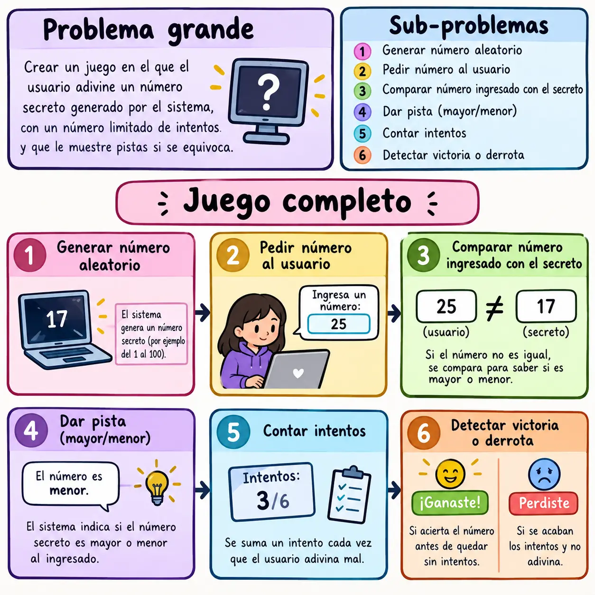
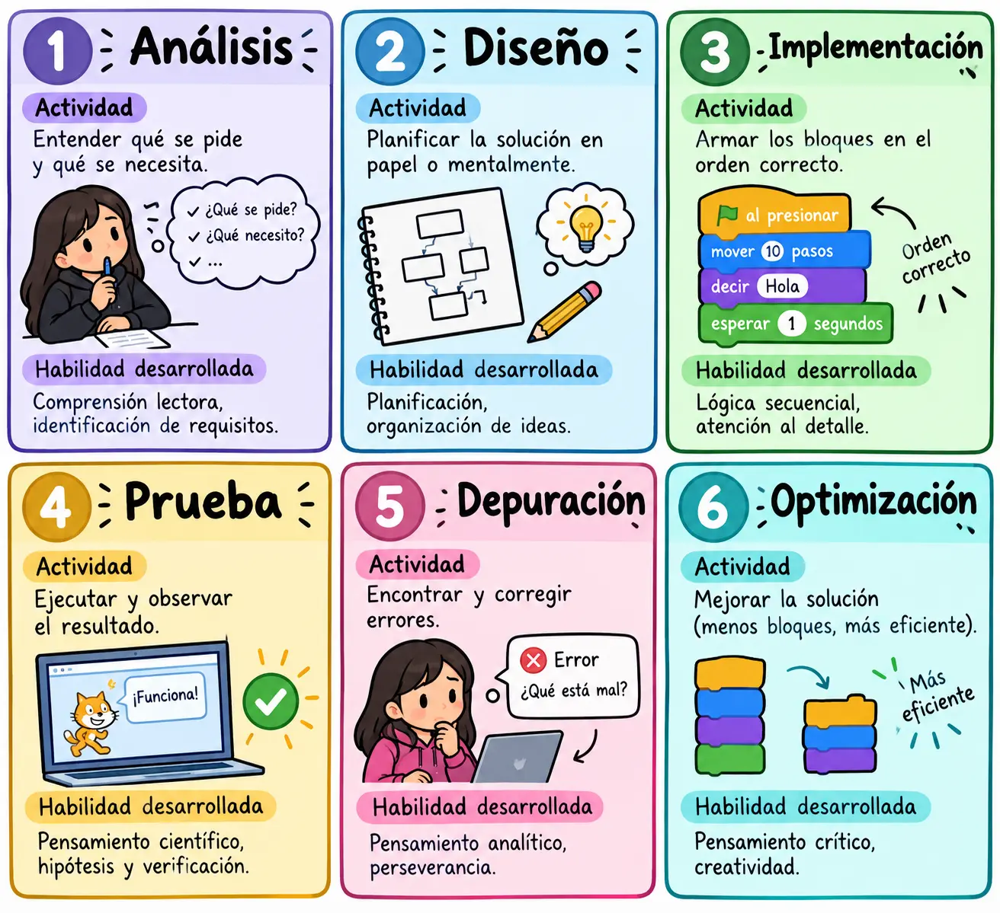

Introducción a la lógica de programación con bloques visuales
¿Qué es la Lógica de Programación?
La lógica de programación es la capacidad de organizar instrucciones de forma secuencial y estructurada para resolver un problema. No se trata de saber un lenguaje de programación específico, sino de pensar como una computadora: descomponer tareas complejas en pasos pequeños, ordenados y sin ambigüedades.
¿Por qué Bloques Visuales?
El Problema de los Lenguajes Textuales
Los lenguajes de programación tradicionales (Python, Java, C++) requieren:
- Memorizar sintaxis específica (punto y coma, llaves, paréntesis)
- Escribir código sin errores de tipeo
- Entender conceptos abstractos antes de ver resultados
- Lidiar con mensajes de error técnicos y frustrantes.
Plataformas de Programación Visual
✓ Scratch (MIT)
La plataforma más conocida. Desarrollada por el MIT para enseñar programación a niños y adolescentes, pero utilizada en todos los niveles educativos.
Características técnicas:
- Entorno drag-and-drop: Arrastrar y soltar bloques en un área de trabajo
- Escenario visual: El código controla personajes (sprites) en una pantalla
- Eventos: Los programas responden a clics, teclas, mensajes
- Multimedia integrada: Sonidos, imágenes, grabación de voz
Conceptos de programación que enseña:
- Secuencias (orden de instrucciones)
- Bucles (repetir acciones)
- Condicionales (si pasa esto, haz esto otro)
- Variables (almacenar datos)
- Eventos (responder a estímulos)
- Funciones (agrupar instrucciones reutilizables)
✓ Blockly (Google)
Biblioteca de código abierto que permite crear editores de bloques visuales. Es la base de muchas plataformas educativas.
Características:
- Bloques generados a partir de definiciones JSON
- Exporta código a JavaScript, Python, PHP, Lua, Dart
- Personalizable para diferentes contextos educativos
- Usado en plataformas como Code.org, App Inventor, MakeCode
✓ MIT App Inventor
Permite crear aplicaciones móviles reales para Android usando bloques visuales.
Características:
- Diseño de interfaz visual (botones, etiquetas, campos de texto)
- Programación de comportamiento con bloques
- Conexión con sensores del teléfono (GPS, acelerómetro, cámara)
- Genera archivo APK instalable
✓ MakeCode (Microsoft)
Plataforma para programar microcontroladores como micro:bit, Circuit Playground y Minecraft Education.
Características:
- Simulador integrado (ver el resultado sin hardware físico)
- Programación por bloques o JavaScript (cambio instantáneo)
- Interacción con hardware real (LEDs, botones, sensores)
Cómo los Bloques Visuales Desarrollan el Pensamiento Crítico
Descomposición (Decomposition)
La capacidad de dividir un problema grande en partes más pequeñas y manejables.
Ejemplo: Crear un juego de "adivina el número"

Reconocimiento de Patrones (Pattern Recognition)
Identificar similitudes entre problemas diferentes para reutilizar soluciones.
Ejemplo: El patrón "contador" aparece en:
- Contar intentos en un juego
- Contar puntos
- Contar segundos en un temporizador
- Contar elementos en una lista.
Una vez que se domina el bloque de "cambiar variable por 1", se aplica en múltiples contextos.
Algoritmos (Algorithm Design)
Crear un conjunto de pasos ordenados para resolver un problema.
Ejemplo: Algoritmo de búsqueda lineal.
Este algoritmo se puede implementar en cualquier lenguaje de programación; los bloques visuales enseñan la lógica que trasciende la sintaxis.
Resolución de Problemas: El Ciclo Completo
La programación con bloques visuales sigue un ciclo que refuerza el pensamiento crítico:

La depuración como herramienta de aprendizaje
Cuando un programa no funciona, el estudiante debe:
- Observar el comportamiento real vs. el esperado
- Hipotesizar qué parte del código causa el problema
- Aislar la sección sospechosa
- Probar cambios uno a la vez
- Verificar si el problema se resolvió.
Este proceso es idéntico al método científico y desarrolla pensamiento analítico transferible a cualquier disciplina.